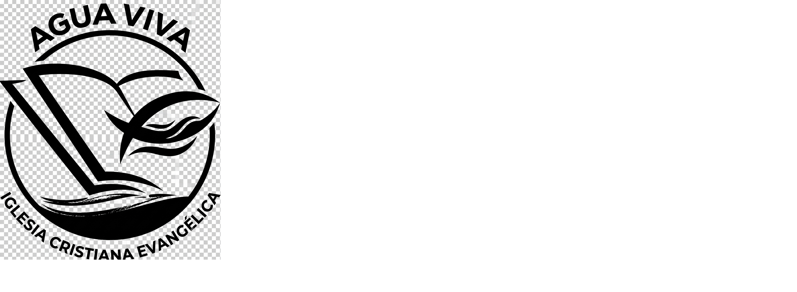
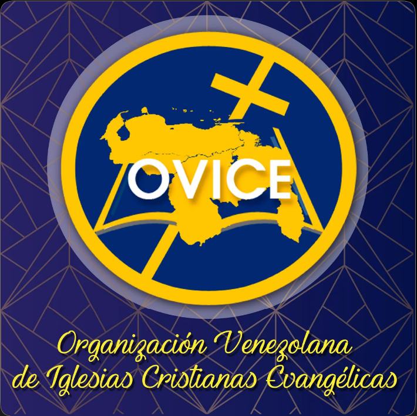

Iglesia Agua Viva
Escuela del Pensamiento
1
Semana 1
4 crucigramas
▼
Reseña del tema próximamente...
Guia 1 - Capitales de Venezuela
Guia 1 - Personajes Bíblicos
Guia 1 - Libros del Nuevo Testamento
Guia 1 - Ver: aprender una palabra, aprender una forma de pensar
2
Semana 2
4 crucigramas
▼
Reseña del tema próximamente...
Predicación del Pastor Edwin Navarro: El Impacto de una Fe Genuina
Guía 2 - Pedro: el apóstol que abrió el camino
Guía 2 - Cartas de Pedro (1 Pedro y 2 Pedro)
La Importancia de la Comprensión Espiritual
4
Semana 4
Nueva
4 crucigramas + boletín
▼
Atrapados y Libres: la gracia que libera
Una Mujer Atrapada y un Hombre Libre
Moisés, libertador de Israel
Génesis: el libro de los comienzos
Libertad, autonomía y responsabilidad
Escuela Bíblica Vacacional 2026 — Estación Iluminación
3
Semana 3
4 crucigramas + boletín
▼
Reseña del tema próximamente...
Predicación del Pastor Edwin Navarro: El Cansancio de los Valientes
Pablo: el apóstol que llevó el evangelio a las naciones
Génesis: Fundamento de la Historia de la Salvación
Esperanza: Una Palabra que Abre el Futuro
Boletín — próximamente